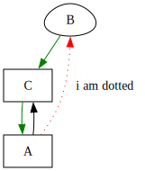

Inline graphviz dot in hakyll
A while ago
I added .dot file support into this blog and used it on
“How do shared library collisions break?”
post.
The change was very easy and helped me a bit to add more visual arrows into posts that came after.
The result was fine for larger .dot files, but one-liners were a bit
clumsy to insert into a stand alone external file. I tried to add a
quick support for inline .dot syntax and failed.
But today I had enough time to actually finish it and behold!
This is generated by the following snippet:
```{render=dot}
digraph {
node [shape=box]
B [shape=egg]
A -> B [label="i am dotted" style=dotted color=red]
A -> C [solor=blue]
B -> C -> A [color=green]
}
```The full change
ended up being very small thanks to pandoc and hakyll’s unixFilter:
inlineDotWithGrapthviz :: TP.Pandoc -> Compiler TP.Pandoc
inlineDotWithGrapthviz = TPW.walkM inlineDot
inlineDot :: TP.Block -> Compiler TP.Block
inlineDot cb@(TP.CodeBlock (id, classes, namevals) contents)
| lookup "render" namevals == Just "dot"
= TP.RawBlock (TP.Format "html") . DT.pack <$> (unixFilter "dot" ["-Tsvg"] (DT.unpack contents))
inlineDot x = return xHere we traverse the pandoc representation of markdown and substitute
{render=dot} for the raw output of dot -Tsvg tool call. Easy!
If you never saw what graphviz is capable have a loot at
their gallery.
Have fun!